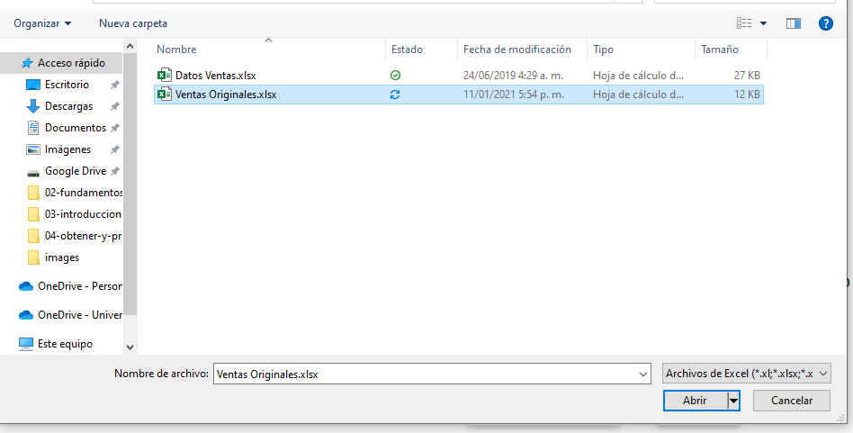

Obtención y preparación de datos con PBI (BI)¶
90 min | Última modificación: Enero 08, 2020.
Conectar a datos¶
Para empezar a trabajar con Power BI Desktop, el primer paso es conectarse a los datos. Hay muchos orígenes de datos distintos a los que es posible conectarse desde Power BI Desktop.
Para conectarse a los datos:
En la cinta Inicio, seleccione Obtener datos > Más.
Aparece la ventana Obtener datos, que muestra muchas categorías a las que Power BI Desktop puede conectarse.
Desde la secretaría de agricultura quieren conocer el estado Desde la secretaría de agricultura quieren conocer la evolución de la producción agrícola nacional desagregada por departamento y grupo de cultivo, esto con el fin de poder enfocar las políticas agrarias a cada una de las unidades productivas. La página Datos abiertos en https://www.datos.gov.co/ contiene datos interesantes al respecto.
Obtener datos externos¶
En la pestaña Inicio de Power BI Desktop, seleccione Obtener datos > Fuente OData para conectarse a un origen de datos Open Data.
En el cuadro de diálogo De web, pegue la dirección https://www.datos.gov.co/api/odata/v4/2pnw-mmge en el campo Dirección URL y seleccione Aceptar. |
Si se le solicita, en la pantalla Acceder a contenido web, seleccione Conectar para usar el acceso anónimo.
La funcionalidad de consulta de PBI devuelve lo que se ha encontrado en la Dirección URL, en este caso, una vista previa con los datos de la producción agricola nacional.
En este momento, puede seleccionar Cargar para cargar la tabla, o bien Transformar datos para realizar cambios en la tabla antes de cargarlos.
Obtener datos desde un libro de excel¶
En la pestaña Inicio de Power BI Desktop, seleccione Obtener datos > Excel para conectarse a un origen de datos EXcel.
Bien, nos vamos a conectar a Excel y lo que tenemos es la lista de los archivos de tipo Excel.

Existe una tabla que se llama Ventas y una hoja o ficha de Excel que se llama Cantidades vendidas. Escogemos la tabla. Siempre que podemos es mejor trabajar con tablas.
Ahora que se ha conectado a un origen de datos, puede ajustar los datos según sea necesario. Para dar forma a los datos, proporcione al Editor de Power Query/Transformar datos instrucciones paso a paso para ajustar los datos mientras los carga y presenta. La operación de dar forma no afecta al origen de datos original, solo a esta vista concreta de los datos.
Transformar los datos¶
Para obtener informes con buena calidad hay que empezar por tener los datos limpios y bien preparados.
Causas de problemas de calidad
Error en la entrada de datos en origen.
Error en los procesos de carga y sincronización, esto provoca que haya inconsistencia en los datos.
Valores para los que no se tienen datos de origen. Posibles valores que pueden tomar: blanco, “Null”, nulo, “N/A”,…
Problemas de calidad de datos
Valores repetidos: pueden sesgar la muestra, y como impiden la correcta relación entre las tablas en los modelos de Power BI, son muy dañinos en ficheros maestros.
Valores ausentes: pueden inutilizar toda la fila de datos, lo cual, en ocasiones es muy grave por la pérdida de información valiosa almacenada en el resto de las columnas y porque pueden distorsionar los hechos, especialmente en los cálculos que se realizan o en el análisis de patrones de comportamiento de la muestra de datos.
Solución a problemas de calidad de datos
Valores repetidos: Quitar duplicados
Valores ausentes: Rellenar hacia abajo o hacia arriba, reemplazar valores según la regla de negocio a aplicar.
Para controlar los errores de calidad de datos en columnas de tipo texto utilizamos también opciones de limpieza de espacios al inicio y al final de las cadenas, así como el tratamiento de mayúsculas y minúsculas.
Ejemplo 1 en Power BI¶
Descargue los archivos de trabajo desde el repositorio https://github.com/dnajarm/power-bi
Un informe analítico requiere contar con las filas de datos necesarias y que además tengan calidad. Sobre el archivo Ventas Originales.xlsx que se encuentra en la carpeta 04-obtener-datos-y-preparar-datos realice las siguientes tareas:
Importar desde un origen externo la hoja Ventas.
Proceso de limpieza y calidad de datos
Reducir las filas quitando las tres filas superiores.
Utilizar la primera fila como encabezado.
Eliminar las filas que contengan Total y Total general.
Quitar solo las filas en blanco.
Eliminar las columnas que sobran (total general).
Completar valores ausentes rellenando filas de datos
Rellenar hacia abajo la columna país.
Sustituir ese valor null que existe en las columnas numéricas por un cero o por algún elemento que se corresponda a la lógica de negocio.
De esta forma, han quedado limpios todos esos vacíos que teníamos en el dato original.
Ejemplo 2 en Power BI - Problemas de espacios¶
Importar desde un origen externo la hoja Datos con espacios.
Proceso de limpieza y calidad de datos
Utilizar la primera fila como encabezado.
Pruebe cambiar las columnas a formato númerico.
Sustituir los espacios de toda la tabla.
Cambiar el formato a Número decimal
Ejemplo 3 en Power BI - Problemas de mayúsculas y minúsculas¶
Importar desde un origen externo la hoja Pais-ciudad.
Proceso de limpieza y calidad de datos
Reducir las filas quitando las filas superiores.
Utilizar la primera fila como encabezado.
Corregir el formato de los registros españa y BOGOTÁ.
Corregir el registro Mexico por México
Eliminar espacios en blanco al inicio y fin de cada palabra.
Agregar columnas desde Power Query¶
En Power BI Desktop puede agregar fácilmente una nueva columna personalizada de datos al modelo mediante el Editor de consultas. Con el Editor de consultas, puede crear y cambiar el nombre de la columna personalizada para crear consultas de fórmula de Power Query M y así definir la columna personalizada. La fórmula de Power Query M tiene un conjunto de contenido de referencia de función completo.
Cuando se crea una columna personalizada en el Editor de consultas, Power BI Desktop la agrega como un paso aplicado en la Configuración de la consulta de la consulta. Esto se puede cambiar, migrar o modificar en cualquier momento.

Ejemplo 4 en Power BI - Agregar columna personalizada¶
Sobre el archivo Datos.xlsx que se encuentra en la carpeta files/04-obtener-datos-y-preparar-datos realice las siguientes tareas:
Importar desde un origen externo la hoja Datos.
Proceso de limpieza y calidad de datos
Crear una columna personalizada llamada identificador con las columnas “País”, “Código”, “Ciudad”. Sobre el primer registros cree un patrón con los dos últimos dígitos de la columna Código, un guion, las tres primeras letras del país en mayúscula, otro guion, el resto de los dígitos del código, otro guion y las tres primeras letras tal y como aparecen de la ciudad.
Ayude a power BI, vuelva y repita el proceso anterior con el siguiente registro.
Crear una columna personalizada llamada Mes Abreviado a partir de la columna Fecha. Sobre el primer registro cree un patrón de mes, así: para 01/06/2019 –> Jun, 02/05/2019 –> May ,…
Ejemplo 5 en Power BI - Agregar columna personalizada¶
Con frecuencia, necesitamos crear nuevas columnas cuyo contenido dependa de la evaluación de una o varias condiciones que se aplican a los datos y a las columnas que tenemos actualmente en la consulta.
Sobre el archivo Ingresos.txt que se encuentra en la carpeta files/04-obtener-datos-y-preparar-datos realice las siguientes tareas:
Importar desde un origen externo Texto o CSV.
Proceso de limpieza y calidad de datos
- Agregar una columna condicional, llamela “Región / Continente”. Evalúe la siguiente condición sobre la columna País:Si País = España –> Salida = EuropaSi País = Méxito –> Salida = América del NorteDe lo contrario –> Salida = América Central y del Sur
- Agregar una columna condicional, llamela “Resultado”. Evalúe la siguiente condición sobre la columna Gasto:Si Gasto < Ingreso –> Salida = OkDe lo contrario –> Salida = No OK
Cambiar el formato de las columnas anteriores por texto.